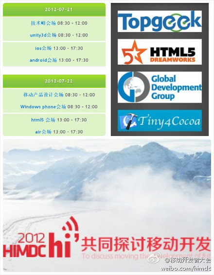

这是多个技术社区联盟合作的大会，下设多个专题分会场。@你好啊1_45262:#2012移动开发者大会-上海# 于6月18日正式开启报名。本届大会分为趋势篇与技术篇，并从iOS、Android、Windows Phone、Html5、Air、Unity3d等多领域展开话题，众多产业领袖与技术大咖首度云集，为广大社区联盟的会员及观众带来一场精彩绝伦的脑力提升盛宴。参会报名：网页链接 
帮妈妈办身份证，要邮寄带照片的光盘。EMS说寄光盘需要居委会盖章证明，保证光盘是积极向上的内容。从这件事至少可以看出，在国内个人是没什么信用的，个人信用要找个官方认可的组织来背书，而且不管这个组织的实际操作者是否是个没多少文化的老太太。
 网页链接
网页链接